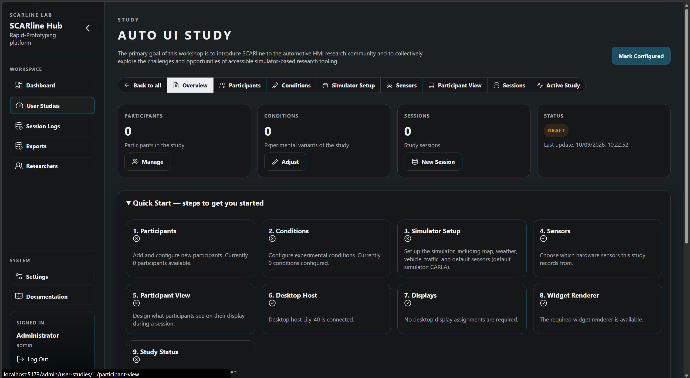

1st SCARline Workshop
On Operationalization of Driving Simulator Studies for Accessible In-Vehicle HMI Prototyping and Evaluation
Abstract
Designing and evaluating in-vehicle Human-Machine Interfaces (HMI) requires researchers and UX designers to simultaneously navigate driving simulation software, interaction design, and user study methodology, a steep learning curve for those without a deep technical background. This workshop introduces SCARline, an open platform built atop a driving simulator that abstracts away technical complexity, letting researchers and designers focus on their research question, study design, and the in-cabin interaction they want to evaluate. A preliminary evaluation with participants from mixed disciplinary backgrounds provided initial validation and surfaced key areas for improvement, motivating this workshop as the next step in an iterative development process. Participants will be introduced to the platform architecture, guided through designing their own HMI widget, and supported in configuring a fully functional user study scenario within the simulator. The workshop invites the broader AutomotiveUI community to engage hands-on with SCARline and collectively inform its future development.
The goal of the workshop
The primary goal of this workshop is to introduce SCARline to the automotive HMI research community and to collectively explore the challenges and opportunities of accessible simulator-based research tooling.
Participants will first gain a conceptual understanding of the problem SCARline addresses, namely the technical overhead that prevents researchers and designers from focusing on their core research questions when working with driving simulators. They will be walked through the physical and software architecture of the platform at a level sufficient to evaluate its applicability to their own research contexts, without requiring prior knowledge of simulator internals.
Participants will then gain hands-on experience designing and implementing an HMI widget, working in small groups to produce a functional interface element and observe it running live within the platform. Building on this, they will configure a simple but fully functional user study scenario directly within the simulator, experiencing the complete research pipeline that SCARline enables, from interface design through to study deployment and data collection.
Finally, the workshop will provide a structured space for discussion around the broader question of accessible and open HMI research tooling: what researchers need from such platforms, what current tools still leave unaddressed, and how platforms like SCARline could evolve to better serve the community. Feedback collected during this session will directly inform the continued development of SCARline.
Workshop Schedule
-
Session 1
Introduction
SCARline
Introduction 10 minPresentation 1,
10 minPresentation 2,
10 min -
Session 2
Platform Walkthrough
Show the platform capabilities with a 5–10 min narrated video
-
Session 3
Widget Creation
Explanation of how the widgets are created
Groups design their own widgets from the set of 2–3 given
-
Official coffee break
SCARline Stations Preparations
-
Session 4
Live Deployment
Participants have the opportunity to explore SCARline themselves and deploy their widgets
-
Session 5
Feedback
Filling out questionnaires
Discussion and Questions

Organizers
Monika Szuban is a Master’s student in User Experience Design at the Technische Hochschule Ingolstadt. Her research interests lie in gamification and user engagement, exploring how playful design approaches can shape automotive and in-vehicle experiences. Her current research addresses the accessibility of simulator-based user studies, with the aim of supporting designers and researchers across varying levels of technical expertise.
Laura Radetzky is a Master’s student in User Experience Design at the Technische Hochschule Ingolstadt. Her work focuses on accessibility, neurodiversity, and gamification in human-computer interaction, including prior research on inclusive gamified questionnaires for neurodivergent participants and automotive gamification. Currently, she contributes to the development of tools that facilitate driving simulator studies and support user-centered automotive research for students and researchers.
Tuğcan Önbaş is a Master’s student in User Experience Design at Technische Hochschule Ingolstadt. His work sits at the intersection of UX research, interaction design and software engineering, with interests in adaptive interfaces, human-centered AI and mobility-related user experiences. Currently, he designs and develops interactive prototypes and research tools for human-centered technology research.
Dr. Ignacio Alvarez holds the Bavarian Top Professorship for Human-Centered Intelligent Systems at Technische Hochschule Ingolstadt. His research interests are at the intersection of agentic AI, systems engineering and human-computer interaction.
Dr. Debargha (Dave) Dey is Assistant Professor for Industrial Design at Eindhoven University of Technology. His research interests are on the human factors of automated driving and intelligent transportation systems, multimodal interaction, and natural user interfaces.
Dr. Wendy Ju is Professor of Information Science and Design Tech at Cornell Tech University. Her research interests are primarily focused on the design of interactive systems, particularly human-robot interaction and autonomous car interfaces. She received her Ph.D. in mechanical engineering from Stanford University and her master’s degree in media arts and sciences from the Massachusetts Institute of Technology.